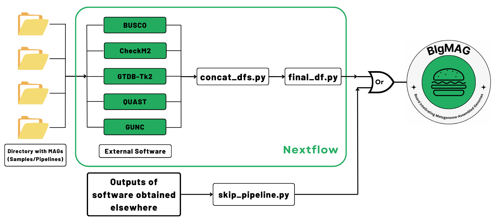
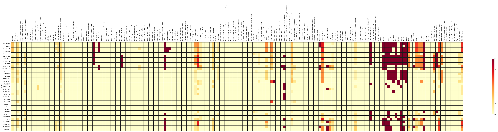
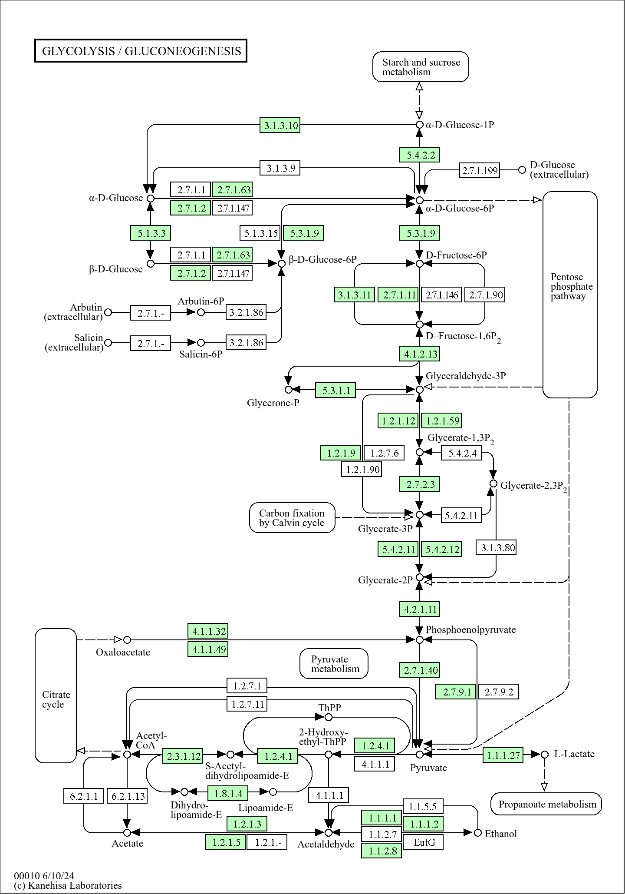
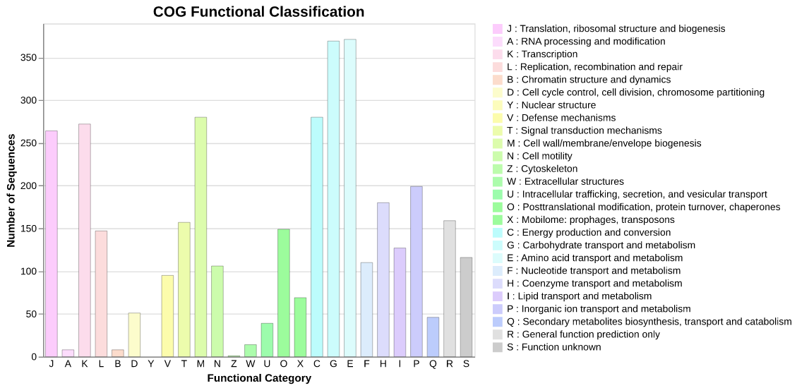
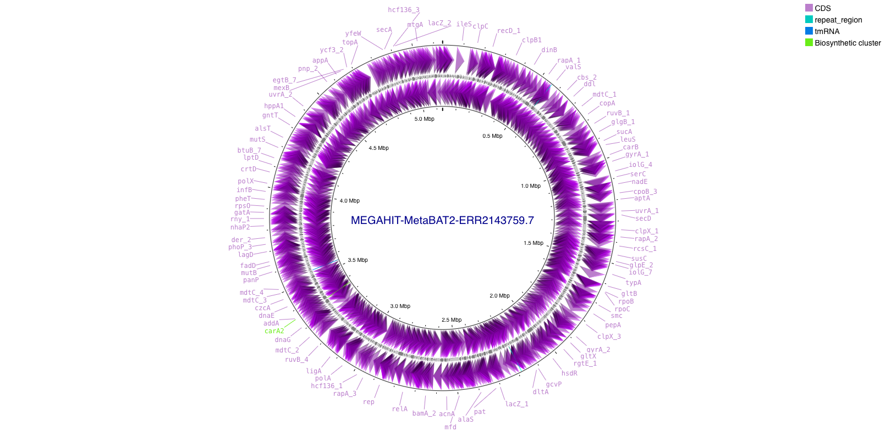
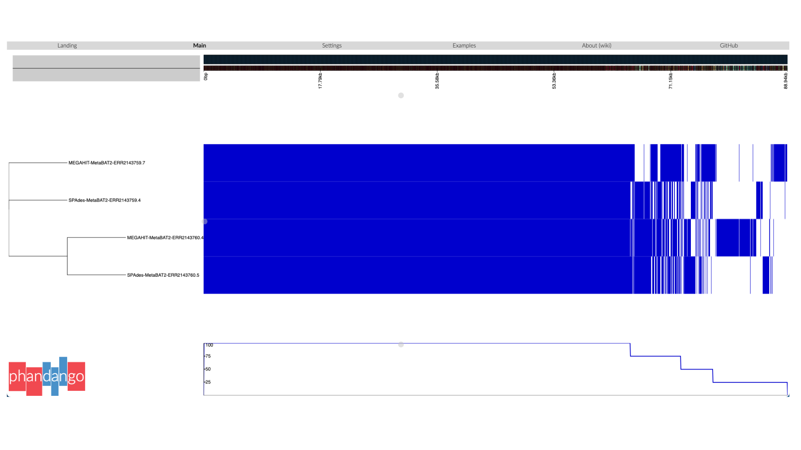

Day 5 - MAG quality assessment, annotation and FAIR data
Learning outcomes
After having completed this chapter you will be able to:
- Evaluate the completeness and contamination of MAGs with BUSCO and CheckM2, and relate the results to quality standards (e.g. MIMAG) for reporting draft genomes.
- Classify MAGs taxonomically and assess their quality and taxonomy interactively with the MAGFlow/BIgMAG dashboard.
- Infer the metabolic potential of MAGs from KEGG orthology terms with KEGG Decoder.
- Annotate and compare functional categories with COGclassifier, dbCAN3 (CAZymes) and antiSMASH (biosynthetic gene clusters).
- Visualize and annotate prokaryotic genomes with Proksee, and compare the gene repertoire of related MAGs with a pangenome analysis (Roary/Phandango).
- Apply the FAIR principles to metagenomic datasets: choose the right repository, prepare adequate metadata, and use workflow managers and containers to make analyses reproducible.
Objective
In the previous chapters we classified communities at the read level (Day 3) and recovered draft genomes from the assembly (Day 4). This final chapter closes the analysis arc: in Session 9 we assess, annotate and interpret the MAGs recovered with nf-core/mag, and in Session 10 we zoom out to the principles that let you (and others) reuse everything you have just done: FAIR data and reproducible workflows.
Session 9 - MAG quality assessment, annotation and classification
From bins to trustworthy genomes
A bin is just a set of contigs that a binner believes belong together. Before a MAG can be reported or interpreted biologically, three questions must be answered:
- Completeness — how much of the genome is present? Estimated from the recovery of ubiquitous single-copy marker genes (BUSCO, CheckM2).
- Contamination — how much foreign sequence has been binned along with it? Detected as unexpected duplications of those same marker genes.
- Taxonomy — which organism does the genome belong to? Derived from marker-gene phylogenies, typically with the GTDB taxonomy.
These criteria are formalized in the MIMAG (Minimum Information about a Metagenome-Assembled Genome) standards, which define quality tiers (e.g. “high-quality” draft: >90% completeness, <5% contamination, plus rRNA/tRNA requirements) that journals increasingly expect when MAGs are reported.
MAGFlow/BIgMAG
MAGFlow is a tool designed to combine several tools to measure the quality of the bins/MAGs, as well as to taxonomically annotate them. This is the workflow:

The output of this tool is a ready-to-use file that concatenates the results, and it can then be used as input for BIgMAG. We will not execute MAGFlow today (you can find the commands to execute MAGFlow on the Moodle page as Commands to run nf-core/mag and MAGFlow), and hence you will find the final_df.tsv within intermediate/magflow/ (download and extract the folder intermediate.tar.gz from the Moodle page) to display the BIgMAG dashboard. Let’s create then the environment for BIgMAG by running the following commands on the GitHub Codespaces terminal:
| Set up the BIgMAG environment | |
|---|---|
1 2 3 | |
Whenever you are asked whether to install extra packages
Please say yes to all!
Now, we are ready to execute BIgMAG to perform the exploratory analysis of the MAG overall quality and annotation:
| Run the BIgMAG dashboard | |
|---|---|
1 | |
You will see on the terminal a link to the dashboard or the editor will offer you an option to directly open a new tab on the browser, just click on it.
Now, it is your turn to analyze the results, use these questions to guide your thoughts:
BIgMAG - overall quality
Overall, the MAGs recovered within your assigned samples have good quality? What would you suggest to improve the quality of the bins that do not depict enough quality?
BIgMAG - quality metrics
The results displayed by BUSCO and CheckM2 are correspondent? Why do you think this is happening?
BIgMAG - taxonomy
What about the taxonomic classification, what would you report in terms of comparison among samples?
BIgMAG - clustering
Were the samples clustered as you expected? What caused this behavior?
BIgMAG - interesting cases
Is there any unusual sample or MAG that catches your attention? What further analysis would you propose to follow in order to dig into this special sample or MAG?
Stop the dashboard
Do not forget to stop the dashboard with Ctrl + c, and to deactivate the environment with:
| Deactivate the BIgMAG environment | |
|---|---|
1 | |
KEGG Decoder
Moving forward, it is time now to identify genomic features within the bins/MAGs. KEGG Decoder is a tool that interprets the metabolic potential of the MAGs (or any genome in general) by analyzing the presence of KEGG Orthology (KO) identifiers. It maps these KOs to major metabolic pathways (biogeochemically relevant) and summarizes the completeness of each pathway based on predefined modules. Being so, we can infer the metabolic capabilities of the community, and gain insights into functional differences across samples or MAGs.
Prokka (included within nf-core/mag) has provided us with the annotation about the presence/localization of enzymes in the bins/MAGs that are involved in a wide variety of processes. Nonetheless, Prokka uses EC numbers to describe such genomic features, and as a result, we needed to transform these annotations to K numbers and merge them into a single file (this was already done for you, the required files to perform these translations can be found within the directory stored on the Moodle page as additional_files.tar.gz). Now, let’s install KEGG Decoder:
| Install KEGG Decoder | |
|---|---|
1 2 3 | |
Whenever you are asked whether to install extra packages
Please say yes to all!
Now, we are ready to execute this software to determine the presence and completeness of the annotated metabolic pathways:
| Run KEGG Decoder | |
|---|---|
1 | |
This command will create a heatmap where you can perform a comparison across MAGs. In this case, we are analyzing the MAGs obtained with the assembler MEGAHIT. It should look like this:

On the y axis you will see just random letters per row, these are the corresponding names MEGAHIT has assigned to the contigs in each MAG. Below you can find a mapping file between the name of the bin/MAG and the contig name (download):
| Bin | Contig name |
|---|---|
| MEGAHIT-MaxBin2-ERR2143759.001.tsv | GIFAEIHF |
| MEGAHIT-MaxBin2-ERR2143759.002.tsv | CIJAKMNO |
| MEGAHIT-MaxBin2-ERR2143759.003.tsv | IACMDEGO |
| MEGAHIT-MaxBin2-ERR2143759.004.tsv | FKGEEGMK |
| MEGAHIT-MaxBin2-ERR2143759.005.tsv | NBLBKFGP |
| MEGAHIT-MaxBin2-ERR2143760.001.tsv | CDMCPOJD |
| MEGAHIT-MaxBin2-ERR2143760.002.tsv | PJEJNNEC |
| MEGAHIT-MaxBin2-ERR2143760.003.tsv | ELBPOCGG |
| MEGAHIT-MaxBin2-ERR2143760.004.tsv | LPDNOCIE |
| MEGAHIT-MaxBin2-ERR2143771.001.tsv | KEBGIGOI |
| MEGAHIT-MaxBin2-ERR2143771.002.tsv | GNGAKHBD |
| MEGAHIT-MaxBin2-ERR2143772.001.tsv | NGILDPFJ |
| MEGAHIT-MaxBin2-ERR2143772.002.tsv | BNBNNLFK |
| MEGAHIT-MaxBin2-ERR2143773.001.tsv | OLADMAGF |
| MEGAHIT-MaxBin2-ERR2143773.002.tsv | EPNPGCJF |
| MEGAHIT-MaxBin2-ERR2143773.003.tsv | OGHEFGBH |
| MEGAHIT-MetaBAT2-ERR2143759.1.tsv | EOMIBOKB |
| MEGAHIT-MetaBAT2-ERR2143759.2.tsv | IMFCMJNE |
| MEGAHIT-MetaBAT2-ERR2143759.3.tsv | JPIOBONM |
| MEGAHIT-MetaBAT2-ERR2143759.4.tsv | IIKMGHIJ |
| MEGAHIT-MetaBAT2-ERR2143759.5.tsv | FJMNHDHH |
| MEGAHIT-MetaBAT2-ERR2143759.6.tsv | HNFOOLAK |
| MEGAHIT-MetaBAT2-ERR2143759.7.tsv | KKNACEHJ |
| MEGAHIT-MetaBAT2-ERR2143760.1.tsv | JMOHPCEH |
| MEGAHIT-MetaBAT2-ERR2143760.2.tsv | JNLKELBO |
| MEGAHIT-MetaBAT2-ERR2143760.3.tsv | BPOICHMO |
| MEGAHIT-MetaBAT2-ERR2143760.4.tsv | OJEIIDGO |
| MEGAHIT-MetaBAT2-ERR2143760.5.tsv | OINBHHLA |
| MEGAHIT-MetaBAT2-ERR2143771.1.tsv | EONPCBDF |
| MEGAHIT-MetaBAT2-ERR2143771.2.tsv | OJCBHCCG |
| MEGAHIT-MetaBAT2-ERR2143771.3.tsv | JADMGMAL |
| MEGAHIT-MetaBAT2-ERR2143771.4.tsv | KKGCJLIG |
| MEGAHIT-MetaBAT2-ERR2143772.1.tsv | KHPHFBJJ |
| MEGAHIT-MetaBAT2-ERR2143772.2.tsv | NECFOIJH |
| MEGAHIT-MetaBAT2-ERR2143772.3.tsv | KDCCMDHF |
| MEGAHIT-MetaBAT2-ERR2143772.4.tsv | FDKDGLCP |
| MEGAHIT-MetaBAT2-ERR2143773.1.tsv | IJLNKNIL |
| MEGAHIT-MetaBAT2-ERR2143773.2.tsv | MACHMHHK |
| MEGAHIT-MetaBAT2-ERR2143773.3.tsv | IGFKCGOH |
| MEGAHIT-MetaBAT2-ERR2143773.4.tsv | LLMAHDOM |
Alternatively, you can upload the K numbers (data/k_numbers/megahit_k_numbers.tsv from Codespaces) to KEGG Mapper – Reconstruct to visualize the presence/absence of all KEGG pathways. Please keep in mind that this file contains all K numbers for MEGAHIT-assembled bins/MAGs, thus what you obtain is a community-level analysis. This is one example of how it should look like:

Deactivate the environment
Do not forget to deactivate the environment with:
| Deactivate the keggdecoder environment | |
|---|---|
1 | |
COG Annotation
Clusters of Orthologous Genes (COGs) are groups of genes from different organisms that evolved from a common ancestral gene and retain the same function. To explore these genes, we rely on the amino-acid sequences of the coding regions provided by Prokka (.faa files). The next task, then, will be to install a COGclassifier in order to detect Clusters of Ortholog Genes:
| Install COGclassifier | |
|---|---|
1 2 | |
Whenever you are asked whether to install extra packages
Please say yes to all!
This tool automatically performs the processes from searching query sequences into the COG database, to annotation and classification of gene functions, to generation of publication-ready figures. However, the input for this tool is only one genome each time. This does not mean that we cannot analyze all the bins/MAGs; we could simply execute the software for each of them and integrate the data afterwards. To launch the tool just run on the terminal:
| Run COGclassifier | |
|---|---|
1 | |
Once it has finished, inside cog_annotation you will see the output represented as tables featuring counts, summary and annotations, as well as interesting figures showcasing the proportion of the different COG categories, just like this:

COG categories
What are the categories that are more representative of this MAG? Do you see any odd results?
COG comparisons
If you decide to analyze all of the MAGs, do you think it would be a fair comparison just using the raw counts obtained by the software? If not, what strategy would you propose to proceed further?
Deactivate the environment
Do not forget to deactivate the environment with:
| Deactivate the cogclassifier environment | |
|---|---|
1 | |
dbCAN3
CAZymes (Carbohydrate-Active enZymes) are enzymes involved in the breakdown, biosynthesis, or modification of carbohydrates and glycoconjugates. They play a crucial role in processing complex carbohydrates such as cellulose, hemicellulose, starch, and chitin, among others. To detect the presence of this kind of enzymes, we are going to use the tool dbCAN3, which is an automated web server designed to run the software and provide the results.
To execute the tool, you just need to download the file from Codespaces data/faas/MEGAHIT-MetaBAT2-ERR2143759.7.faa, upload it to the server (click here), submit a job and wait for the results.
Tools included in the execution
You can select the tools to include in the execution (HMMER, DIAMOND, dbCAN-sub, CGCFinder). However, please keep in mind that the more tools you include, the longer the run.
The output should look like this (a preview of the first rows is shown below, and the full table is available as a downloadable file):
| GeneID | EC | HMMER | dbCAN_sub | DIAMOND | SignalP | NofTools |
|---|---|---|---|---|---|---|
| OJEIIDGO_00076 | None | GH2(51-929) | None | None | Y(1-22) | 1 |
| OJEIIDGO_00091 | None | GH20(151-512) | None | None | Y(1-20) | 1 |
| OJEIIDGO_00143 | None | CE1(19-254) | None | None | N | 1 |
| OJEIIDGO_00156 | None | GT41(135-688) | None | None | N | 1 |
| OJEIIDGO_00303 | None | GH16_3(35-227) | None | None | N | 1 |
| OJEIIDGO_00341 | None | GH73(158-287) | None | None | N | 1 |
| OJEIIDGO_00345 | None | GH177(38-426) | None | None | Y(1-35) | 1 |
| OJEIIDGO_00582 | None | AA3(3-568) | None | None | N | 1 |
| OJEIIDGO_00690 | None | GH109(41-201) | None | None | N | 1 |
| OJEIIDGO_00879 | None | GH73(136-324) | None | None | N | 1 |
Visit the CAZy website if you want to know more about enzyme families and classes reported by dbCAN3. Similar to the COGclassifier, we can perform the analysis for all the MAGs, and integrate the data afterwards to achieve an overall comparison.
antiSMASH
antiSMASH (antibiotics & Secondary Metabolite Analysis SHell) is a tool that detects and analyzes biosynthetic gene clusters (BGCs) in microbial genomes. These clusters are groups of co-located genes that together encode the machinery to produce secondary metabolites—specialized compounds that are not essential for basic cellular functions.
Analogous to dbCAN3, we will use the web server to annotate one of the MAGs recovered by the pipeline. Upload the file intermediate/gbks/MEGAHIT-MetaBAT2-ERR2143759.7.gbk (download and extract the folder intermediate.tar.gz from the Moodle page) to antiSMASH and wait for the results.
If it takes some time, we have performed this step for you and we stored the results within the same intermediate.tar.gz file, at intermediate/antiSMASH/index.html.
Proksee
Proksee is an interactive web-based tool for visualizing, annotating, and analyzing prokaryotic genomes. Using this tool we can visualize genomes as circular or linear maps, annotate them, customize the visualization and export high-level and detailed-oriented figures.
Same as with previous applications, you just need to upload the annotated genome in FASTA or GenBank format. Here, we are going to leverage the files produced by Prokka, and hence you just need to upload the file (download and extract the folder intermediate.tar.gz from the Moodle page) intermediate/gbks/MEGAHIT-MetaBAT2-ERR2143759.7.gbk to Proksee.
You can customize the display, add features, re-annotate the genome among many other functionalities. Unfortunately, it processes only one genome at a time. From here it’s up to your goals/motivation to take advantage of this tool.
You should be seeing this example:

Pangenome
For the past tools we have not analyzed just a random MAG: we selected this one given that its taxonomic annotation is shared across different samples (from the BIgMAG exercise), and therefore it is interesting to establish the similarities/differences among these MAGs to enable a pangenome analysis. In this case, we study the entire gene repertoire of related MAGs (same species or genus); for our analysis we have selected some MAGs based on GTDB classification.
Next, we run the tool Roary that determines the core genome, accessory genome and unique genome. We have pre-computed the results for you following the tutorial presented by the developers of the tool, and now we are going to visualize the results using Phandango.
Drag and drop the files (download and extract the folder intermediate.tar.gz from the Moodle page) intermediate/pangenome/JAAUTG01/workshop.newick and intermediate/pangenome/JAAUTG01/gene_presence_absence.csv to the Phandango web server and visualize the results.
It should look like this:

Usually, this analysis is carried out using a reference genome; however, given that these MAGs are not annotated at species level, and genus annotation is not informative, we do not count with a reference genome to explore the pangenome of these MAGs. You can visualize an example that includes a reference genome with the files found at intermediate/pangenome/example_with_reference (download and extract the folder intermediate.tar.gz from the Moodle page).
Session 10 - FAIR data and reproducibility
Why FAIR?
Everything we did in this course produces valuable research objects: raw reads, assemblies, MAGs, taxonomy tables, figures. If these outputs cannot be found, accessed, interoperated and reused — by your future self, by your collaborators, or by reviewers — much of their value is lost. The FAIR principles provide the checklist:
- Findable — with a persistent identifier (DOI/accession) and rich, indexed metadata.
- Accessible — deposited in a trusted repository, retrievable with standard protocols (and clear license/conditions).
- Interoperable — using community formats and controlled vocabularies/ontologies, so that both humans and machines can process the data.
- Reusable — with clear provenance (how the data were generated and processed) and a license that states how it may be reused.
FAIR in practice: repositories and metadata
For metagenomics, this translates into concrete actions:
- Raw reads — deposited in INSDC repositories (NCBI SRA, ENA, DDBJ) at submission of the associated BioProject/BioSample. Note that the datasets used in this course (PRJNA256993 on Day 2, PRJEB22811 on Day 3) are public exactly because they were submitted with proper metadata.
- Metadata — follow the community checklists: MIxS (Genomic Standards Consortium) packages for environment, host and sampling metadata; MIMAG for MAG reports (quality metrics, taxonomy, code availability). Metadata richness is what makes the difference between a reusable dataset and an uninterpretable FASTQ file.
- Assemblies and MAGs — deposited in GenBank/IMG-M/ MG-RAST with their quality statistics and taxonomy.
- Analysis outputs and code — supplementary tables with DOIs (e.g. Zenodo, connected to a GitHub release), plus the exact commands and parameters used.
Question
Look at the PRJNA256993_SraRunTable.txt metadata you used on Day 2: which MIxS fields are covered? Which ones would a reviewer still ask for (e.g. sampling protocol, extraction kit, PCR primers)?
Reproducible analyses: workflows and containers
FAIR data alone is not enough: the process that turns reads into results must also be reproducible. Throughout this course we have (implicitly and explicitly) relied on the two pillars of computational reproducibility in bioinformatics:
- Workflow managers — tools such as Nextflow (used for the Kraken2/Bracken pipeline on Day 3 and for nf-core/mag on Day 4) capture the entire analysis — every tool, parameter, input and output — in a single executable, versioned definition that can run on a laptop, a cluster or the cloud. Communities such as nf-core provide curated, peer-reviewed workflows that you can reuse instead of reinventing.
- Containers — Docker/Singularity images freeze the software environment (OS libraries, tool versions) of each step, so the same workflow produces the same result anywhere, forever. nf-core pipelines, for example, ship every process as a container.
A practical recipe for a FAIR and reproducible metagenomics analysis:
- Version your workflow and scripts in Git (e.g. on GitHub), with a README that states how to run them.
- Run them with a workflow manager (Nextflow, Snakemake) using containers/conda environments pinned to specific versions.
- Record the parameters and database versions (e.g. the exact Kraken2 database and Silva release used above).
- Deposit raw data and derived objects in trusted repositories with rich metadata and persistent identifiers.
- Report according to community standards (MIxS, MIMAG), and license your code and data so others can reuse them.
Course wrap-up
Over these five days you have travelled the full metagenomics analysis arc: from study design and quality control (Day 1), through targeted amplicon analysis (Day 2), read-based shotgun classification and community statistics (Day 3), de novo assembly and MAG recovery (Day 4), to MAG quality assessment and functional interpretation (Session 9) — and finally to the principles that make all of it shareable and reusable (this session). We hope you will take this workflow back to your own data!
Post-course support
You will receive continued support via email for 30 days following the course, along with on-demand access to the session recordings for the same period. Do not hesitate to bring your own data questions to the discussion slots or by email.
Additional resources
If you want to explore more in detail how you can expand your analysis, please check the following resources: